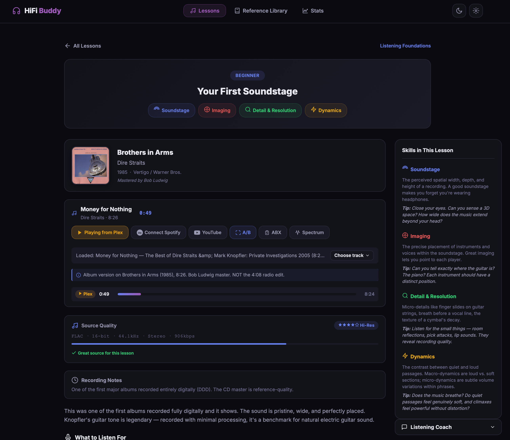
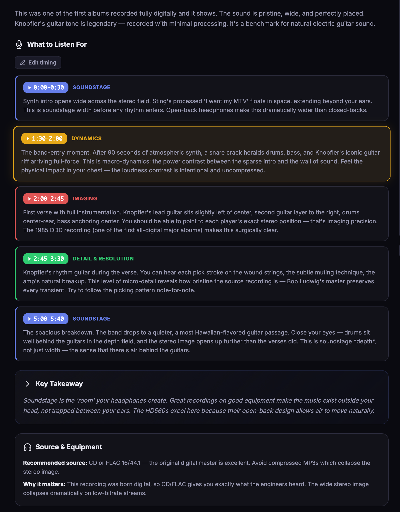
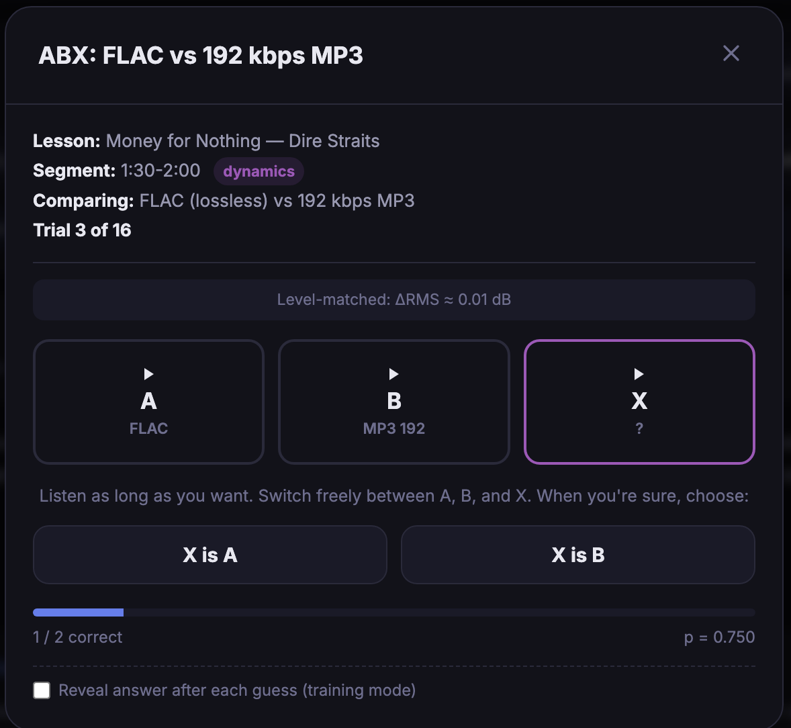
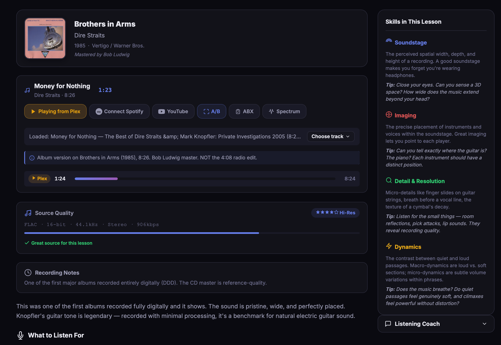

01
Gear can't listen for you
A $5,000 DAC won't make you a better listener. Trained ears will. HiFi Buddy is the missing layer between your equipment and your perception.
HiFi Buddy is a critical-listening tutor that trains your ears to hear what audiophiles actually hear — soundstage, imaging, micro-detail, transients — using thirty curated lessons built around real reference recordings.
You can spend a year reading reviews and never get better at listening. The only way to hear like an audiophile is to practice — deliberately, with the right material and the right prompts.
A $5,000 DAC won't make you a better listener. Trained ears will. HiFi Buddy is the missing layer between your equipment and your perception.
Other people's opinions about gear say nothing about what you can hear. The only useful test is the one you run yourself, blind, in your room.
Built-in ABX testing with proper level matching and a binomial p-value. We won't tell you whether FLAC sounds better — we'll tell you whether you can actually tell.
Streams from your own FLAC library through Plex. Spotify is there as backup, not the headline act. Your music, your machine, your rules.
Real screenshots from the app. Dark mode shown — light mode is also built in.




A focused toolkit. No bloat, no upsell, no subscriptions.
Each lesson is built around a single reference track — Dire Straits, Steely Dan, Diana Krall, Aphex Twin, Bill Evans — with timestamped passages calling out specific listening skills.
Lossless from Plex (recommended), or point at a folder of FLAC files for fully offline lossless mode, or fall back to Spotify Premium via the Web Playback SDK. One UI, three sources.
Every lesson comes with annotated time markers. Click the timestamp, jump to the moment, and the lesson tells you exactly what you should be hearing right then.
A proper ABX test runner: 16 trials, level-matched FLAC versus MP3, randomized order, binomial p-value. Find out — actually find out — what you can hear.
Real-time spectrum during playback, with an optional headphone frequency-response overlay (39 measured headphones included). See where the sub-bass sits, where the air lives, and what shape your headphones are colouring it through.
Tell HiFi Buddy what you're listening on — headphones, DAC, amp — and lessons annotate accordingly. "Ideal for your open-back headphones." "May be subtle on IEMs." No more guessing whether it's you, the recording, or the gear.
Ten lessons recorded in iconic rooms — Village Vanguard, Musikverein, L'Olympia, Electric Lady, 30th Street Studio — show a photo of the venue with a note on its acoustic. The room is part of every recording.
Different master? Different cut? Edit any lesson's timestamps in place, with M:SS-M:SS validation, and export your corrections as JSON to send upstream. Your edits stick across reloads and travel with your settings backup.
Open it. Pick a lesson. Listen. The whole loop is under thirty seconds from launch to first guided listen.
Browse thirty lessons grouped by skill — soundstage, transients, tonal color, separation, air. Each one is built around a track chosen for what it teaches, not what it sells.
Stream from your Plex library if you have it, or Spotify Premium if you don't. HiFi Buddy negotiates the source and tells you the real bitrate.
The lesson scrolls with the music. Each annotation tells you exactly what to listen for, exactly when. Click any timestamp to replay that passage.
Optional, but recommended. Sixteen trials, FLAC versus MP3, level-matched and randomized. The result is a number, not an opinion.
The audio world is awash in feeling. Cables sound "warmer." DACs sound "more analog." HiFi Buddy doesn't argue with any of that — it just gives you a tool to find out which of those claims survive a blind test on your own ears.
The ABX runner plays you sample A, sample B, and a hidden sample X that's either A or B. You guess. We log it. We do that sixteen times, randomize the order, and report a binomial p-value at the end.
If you're guessing, the math will say so. If you're hearing something real, the math will back you up. Either way, you've replaced a vibe with a number.
correct answers · FLAC vs 320kbps MP3
You're hearing a real difference. This isn't placebo — the result would happen by chance roughly twice in a thousand runs.
The macOS app is a 90 MB drag-to-Applications install. No signup, no account, no telemetry — runs entirely on your machine.
macOS Gatekeeper note: the app is unsigned. First launch needs right-click → Open → confirm "Open Anyway" once. After that, double-click works normally. More detail.
$ git clone https://github.com/hifibuddy/hifi-buddy
$ cd hifi-buddy/hifi-buddy-app
$ python3 server.py
# open http://127.0.0.1:8090/ in your browserHiFi Buddy is built in vanilla JavaScript with the Web Audio API and the MusicBrainz catalog. No frameworks. No build step. No bundler. No analytics. The whole thing is one folder you can read in an afternoon.
Issues, pull requests, lesson contributions, and reference-track suggestions are all welcome. If you want to add a lesson on a track you love, the format is JSON and the bar is "teaches a real listening skill."